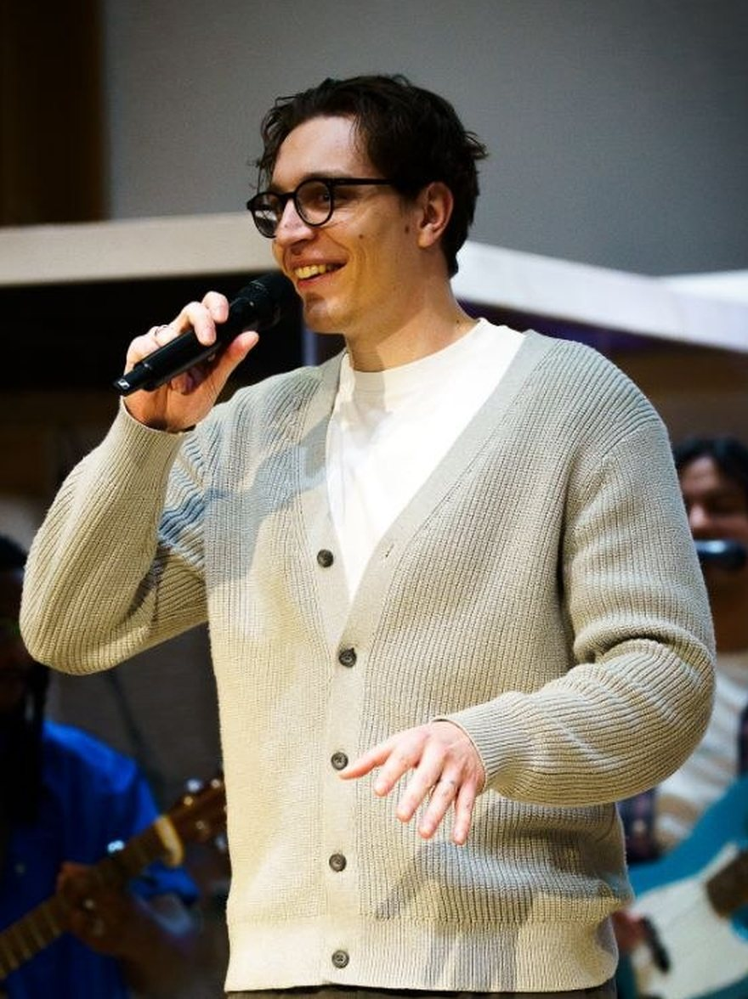

RecoverFlow
Payment recovery for Stripe businesses: a heads-up before cards fail, win-back flows, a report of what came back. Built solo with Claude Code and Lovable. No users yet, and I'm saying so.
Web app
That's the work I take on. I find the owner, build what's missing, and keep it moving until it's done.
Most recently Chief of Staff at Google Cloud Marketing, through Deloitte. Before that: Yuno, Cadillac Fairview, CBRE.
A company growing fast, with no shared way to set or track goals. Everyone was busy; nobody could say what mattered most this quarter. With the CEO, I built the company OKR system from scratch, then a performance cycle to go with it.
During a restructuring I sat with the Heads of Product and Engineering and worked out who owns what. Then I ran the leadership workshops that turned competing priorities into one 90-day plan.
Job hunting on LinkedIn means scrolling past the same posts, reposted, and opening "remote" roles that turn out to be hybrid three paragraphs down. Jobs Cleaner is a Chrome extension that hides what you've already seen, filters out the fake-remote ones and flags reposts.
I'm not an engineer. I built it by directing AI tools, the same way I run a program: clear scope, small releases, test it on real use.
← → to move · Space to jump · Enter to read · on phones, use the buttons
Seven regions and two vendor firms were doing overlapping work, and nobody was sure who owned what. I co-led the operating-model review: mapped the overlaps and gaps, set clear owners and escalation paths, and helped write the action plan we took to leadership.
I also ran the financial reporting and analysis for a $36M cost center. A weekly budget review turned up $800K of spend booked in the wrong place, and I recommended moving $300K of underspend to close a projected deficit.
Some regions had already built smart automations for their own reporting. I took them and scaled them across the other regions. LATAM's alone was projected to save more than 1,000 hours a year.
An early-stage team building a platform for investment firms. The CEO and CTO had the vision; the customers were VC, private equity and family-office teams who know exactly what annoys them and have no time to explain it twice.
Part-time, alongside the CEO and CTO, I ran the discovery: sat with those teams, mapped how they actually work, and turned it into a prioritized backlog and user stories. Then I ran the sprints with engineering and UX, and helped with the demos and negotiations that followed.
Finance and Technology were running 100+ initiatives a year and no single place to see them all. I built the PMO: intake, prioritization, a weekly delivery rhythm.
I also built the Asana portfolio system used to track the biggest programs and report to the senior leadership committee, and ran the VP-level steering committees.
Payment recovery for Stripe businesses: a heads-up before cards fail, win-back flows, a report of what came back. Built solo with Claude Code and Lovable. No users yet, and I'm saying so.
Web appA coach inside Claude, with Notion as its memory. I say what I lifted, Wispr Flow turns my voice into text, and the coach logs it and adjusts the plan. Now I just train.
Claude + Notion + Wispr FlowA retro platformer in chapter 03: five worlds, true stories, and a coffee and a dumbbell hidden in each. Made because a list of jobs is boring.
Play again ↑